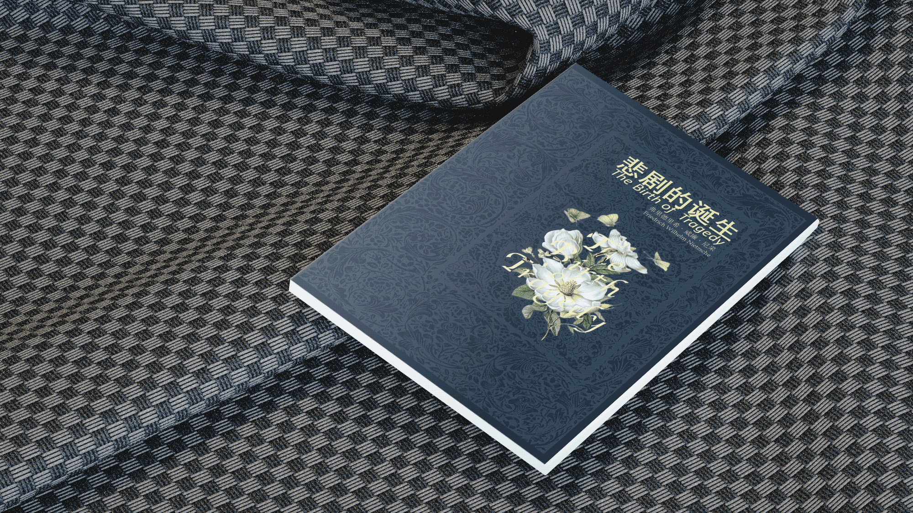
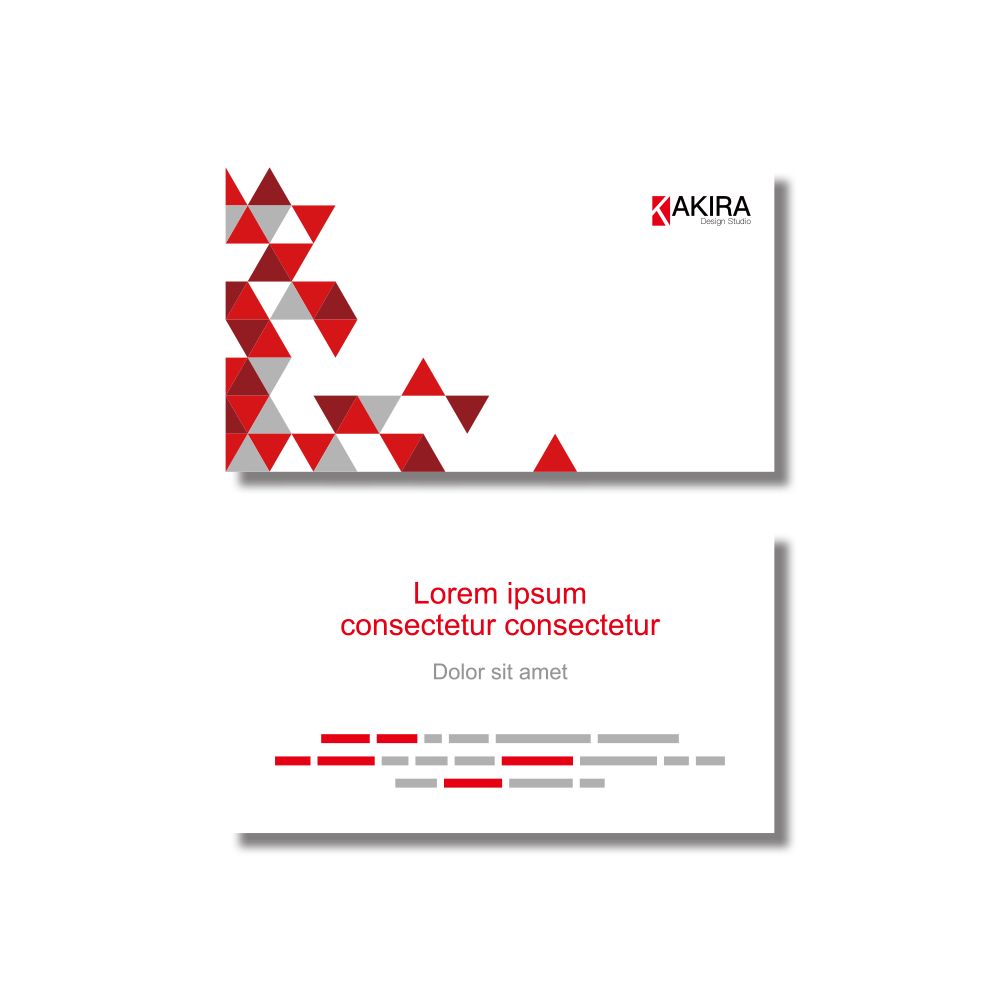
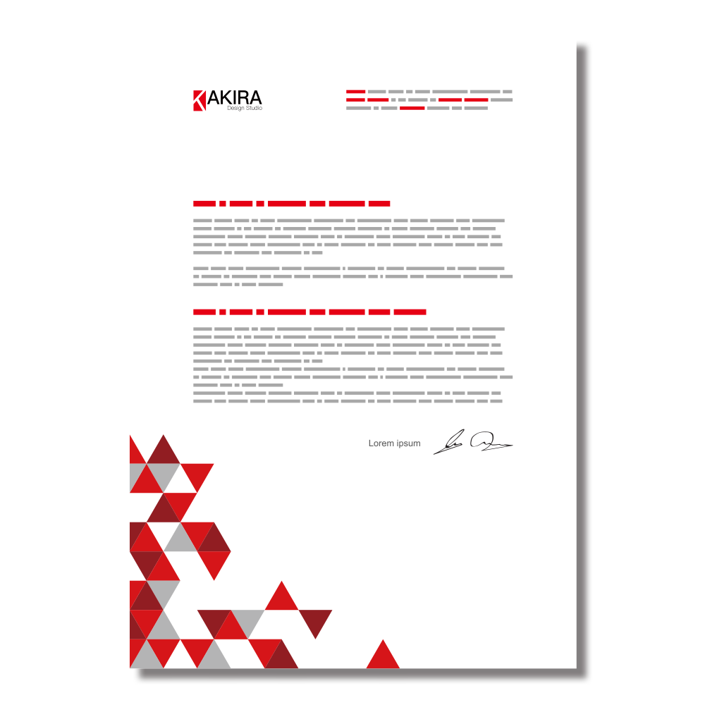

书籍设计 - 悲剧的诞生
领域：平面设计
类别：书籍设计
时间：2017/11/13
悲剧的诞生(The Birth of Tragedy)是德国哲学家弗里德里希·威廉·尼采创作的哲学著作，而本书设计是我在本科学习过程中的书籍设计与装帧这一课程的课堂作业。本设计是对于整本书的完全设计，包括封面、扉页、目录、内容等，是一个完整的书籍设计作品。

书籍设计 - 悲剧的诞生
悲剧的诞生(The Birth of Tragedy)是德国哲学家弗里德里希·威廉·尼采创作的哲学著作，而本书设计是我在本科学习过程中的书籍设计与装帧这一课程的课堂作业。本设计是对于整本书的完全设计，包括封面、扉页、目录、内容等，是一个完整的书籍设计作品。
Akira的主要LOGO
这是 AKIRA 的主要品牌标志，通过对Akira中“K”这一英文字母的拓展绘制而得，应尽量使用全彩色版本。
红色色值：CMYK(0,100,98,0)、RGB(230,0,20)
办公系统部分
办公系统部分指Akira工作室中所使用的办公用品组合和使用规范，其中包括信纸、信封、 办公用纸、工作牌等。



环境系统部分
环境系统部分指Akira工作室环在户外环境系统中所使用的设计和使用规范，其中包括户外大、小型广告牌 和前台等。